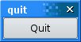

Making ConnectionsThe second example shows how to respond to user actions. The application consists of a button that the user can click to quit. The source code is very similar to Hello, except that we are using a QPushButton instead of a QLabel as our main widget, and we are connecting a user action (clicking a button) to a piece of code. This application's source code is on the CD in the file /examples/chap01/quit/quit.cpp. Here's the contents of the file:
1 #include <QApplication>
2 #include <QPushButton>
3 int main(int argc, char *argv[])
4 {
5 QApplication app(argc, argv);
6 QPushButton *button = new QPushButton("Quit");
7 QObject::connect(button, SIGNAL(clicked()),
8 &app, SLOT(quit()));
9 button->show();
10 return app.exec();
11 }
Qt's widgets emit signals to indicate that a user action or a change of state has occurred.[*] For instance, QPushButton emits a clicked() signal when the user clicks the button. A signal can be connected to a function (called a slot in that context), so that when the signal is emitted, the slot is automatically executed. In our example, we connect the button's clicked() signal to the QApplication object's quit() slot. The SIGNAL() and SLOT() macros are part of the syntax; they are explained in more detail in the next chapter.
Figure 1.3. The Quit application We will now build the application. We assume that you have created a directory called quit containing quit.cpp. Run qmake in the quit directory to generate the project file, then run it again to generate a makefile, as follows: qmake -project qmake quit.pro Now build the application, and run it. If you click Quit, or press Space (which presses the button), the application will terminate. |